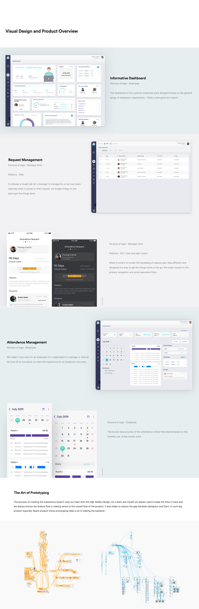
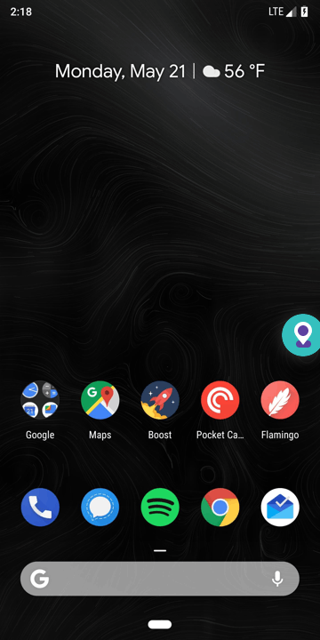
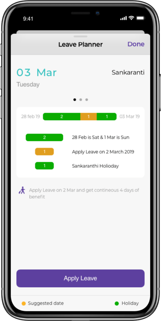
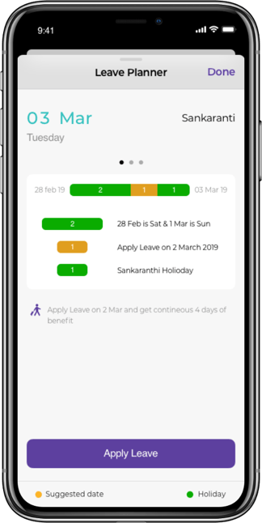
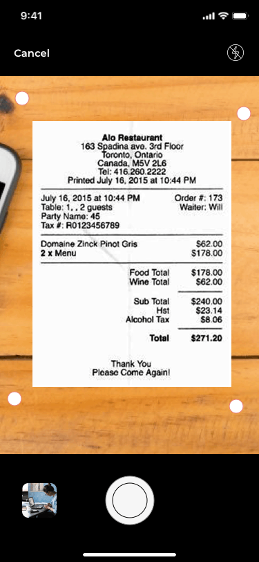
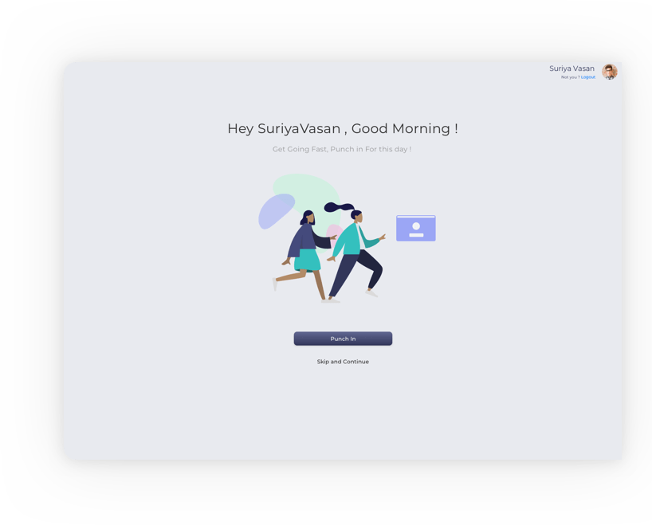
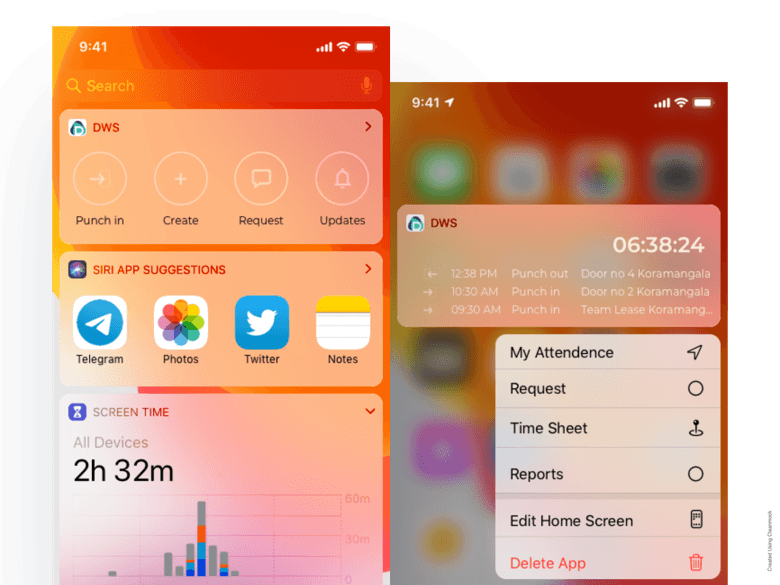
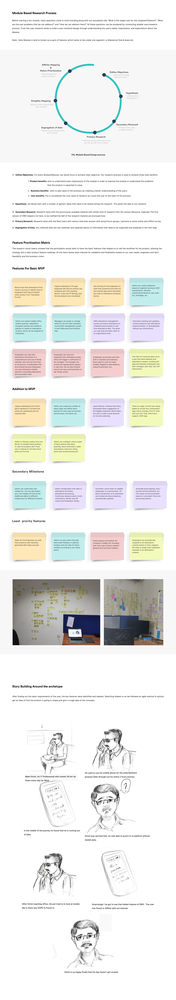
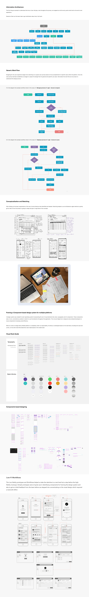
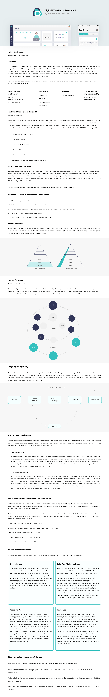

 

Iceing on the cake : Adding Value to Platform
Scan and add the Bill to Expense
The process of adding bills to trips or expense is never been easier. It is being the long process for each and every bill for the user . From the research we cakme to know that user badly needs an easy approach carry forward with adding the bills and proofs to the platform. Here is our solution
Story Happns
We always take a stand to guide the user through telling some story or visual guide for them get things done easily and get going fast in day to day users
we always tried to leverage the power of native, so we used to take native
features of the platform such as widgets, force touch, Push notification etc..

features of the platform such as widgets, force touch, Push notification etc..
Milage Tracking
Milage tracking is most anticipated feature for the employer who is dealing with end- salse and marketing pleople, This comes handy for them also to normal commuter for official work and this tracking seamlesly integrated with Expense claims
Leave Planner
This is unique feature of the platform where product which work ultimately for the employee and it will automatically comes with the leave suggesstion based on persons accountable leave balances
Validation: Evaluating interfaces and usablity
The people whom we involved in evaluating the solutions involved people both new HRMS users and power users who were regularly using HRMS in their day to day tasks. Each user was given the same task with different variants of the user interface to carry out A/B testing and multivariate testing in order to determine the finest one in terms of usability and functionality.
Reflection & Takeaways
Not everytime a designer gets a golden opportunity to design an end to end product with a large consumer base. I cherish this opportunity which helped me in improving myself as a product designer impacting thousands of people in their day to day professional life and business. Here are few key takeaways in the process.
Additional Discussion
You Have Got An Idea ?
Let’s Make it Happen !
Let’s Make it Happen !
Hope you got little understanding about the product ! its worth to discussing in person, so we can discuss about the points which i Missed in the case study. that i can explain lot of funny stories behind shapes and interface.
The detailed visual design process.
Sketching alternative ideas & variants.
Elaborated User testing.
Design decisions across the Product .
Detailed prototypes for multiple platfroms.
Some creative stuff we did
How i came with the complete design system for the product
Our Unique 8 box iteration Method
Learn about the prespective of core users
I was able to narrow down the features for the first Iteration of second version of the product by learning about the users and their required goals they want to achieve on using the product.
Never Regret for challenges
HRMS applications are usually considered as an application involving lot of touchpoints and Integartions along with multiple persona of users depending upon the organizarion policy. When I started the process it looked very complex, later I learned, collaborated, elevated myself throughout and now I have got a motive to solve scalable problems.
Ability to collaborate across cross-functional teams is an essential quality of a product designer. I got to collaborate with managers, developers working on multiple platforms, quality assurance team, marketers to bring out the product to the customers. This helped me in accomplishing the goals as a team.




